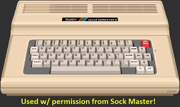
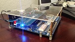
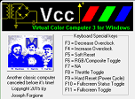
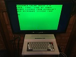
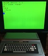

CoCo3.org
- 10/11/2023 11:40 PM: -- Looks good. Says will share code at some point : 2023 Coco3 my First Double Buffered Sprites!
- 10/08/2023 10:30 AM: -- TCCN Ep# 333 / News Stories
- 10/07/2023 07:00 PM: -- This is a good playlist: Color Computer 2 Restoration and upgrades for #SepTandy by YARC!
- 10/04/2023 08:50 PM: -- CoCo Town's second video on improving his game: Off screen buffers | Game revolutions cycle 2
- 10/01/2023 11:45 PM: -- TCCN Ep# 332 / News Stories
- 09/30/2023 11:20 PM: -- Officially it is still #SepTandy -- I thought this was cool. Using his speakers to amplify the signal is genius! CoCo to CoCo Data Transfer Using CSAVE and CLOAD!
- 09/30/2023 05:15 AM: -- From Canadian Retro Things Very cool! A CoCo2 w/ a 256k Banker Switch CoCo 2: Part 1 never heard of it!
- 09/30/2023 04:30 AM: -- Amigos Retro Gaming released a video on The Games Of Nick Marentes' - A TRS-80 Color Computer Tribute
- 09/28/2023 06:30 PM: -- A great blog series by Glen Hewlett: How to setup and use IRQs on the TRS-80 Color Computer
- 09/27/2023 08:10 PM: -- La CoCo Strangiato released a new video: SVI CAS - Houston, we have a problem!
- 09/27/2023 08:05 PM: -- Boisy Pitre has been working on a new OS-9 Level 1 port to a project called Foenix F256 Jr. Video and description and here on FB.
- 09/26/2023 06:50 PM: -- CoCoTECH Show - a live and interactive discussion (w/ technical difficulties!!) about the finer technical topics of Color Computers, Dragons, MC-10, clones, and hardware cousins!
- 09/26/2023 06:45 PM: -- CoCo Town is going to improve his game: Let's start improving that game! | Game revolutions cycle 1
- 09/24/2023 01:40 PM: -- TCCN Ep# 331 / News Stories
- 09/23/2023 08:40 PM: -- Interesting one from CoCo Town Can I dial my CoCo into a BBS at 300 baud in 2023?. I did not BBS until I had a PC and even then it was only about a half dozen times. I did telnet for a bit on Delphi before I got a local dial-up ISP w/ full-fledged internet access.
- 09/20/2023 07:40 PM: -- Jason Thorpe uploaded an update of his 6809 Playground SBC: 6809 Playground - PETSCII Robots mini update 0
- 09/17/2023 06:40 PM: -- ACs 8-Bit Zone uploaded a cool video: Building a Mechanical Keyboard from Scratch. He does not say if plans on selling any. We’ll see. It would be cool if he made it open-source, however, it looks like it might be somewhat easy to duplicate w/ a little experience as an electronic maker.
- 09/17/2023 05:40 PM: -- TCCN Ep# 330 / News Stories
- 09/15/2023 09:00 PM: -- A couple noteworthy videos from Dave and Sharron Veary: Coco 3 Sprites for #Septandy with code. And Editing Sprite Code with Edtasm. Some very interesting info to be gleamed from these. Quite a few other Assembly Language videos, so check them out. (Also a lot of digital simulations I find interesting!)
- 09/14/2023 06:25 AM: -- Good year old video review about the CoCo3! Exploring the Color Computer 3 and Testing the Power of the Color Computer 3.
- 09/10/2023 04:00 PM: -- Jason Thorpe is creating an awesome series of videos on a 6809 build he is working on. 6809 Playground. And he has a GitHub site w/ the design files, which is very cool! I just stumbled across this project and look forward to following and studying along w/ him.
- 09/10/2023 03:30 PM: -- TCCN Ep# 329 / News Stories
- 09/07/2023 04:45 PM: -- CoCo Town resurrects a game he started when in high school
- 09/07/2023 04:35 PM: -- La CoCo Strangiato has a new video: HDMI On Board! | HDMI On Board - Part 2
- 09/06/2023 06:35 PM: -- ACs 8-Bit Zone has new vides:
- 09/06/2023 06:20 PM: -- Sixxie has created a Dragon 64 Motherboard Build which is very cool and if I ever get around to it would like to build one myself. Kudos for making it a open source! Dragon 64 motherboard
- 09/04/2023 05:30 AM: -- CMOC 0.1.85 Announcement! I need to get into this and write a couple things for the CoCo using it.
- 09/03/2023 04:40 PM: -- TCCN Ep# 328 / News Stories
- 09/01/2023 12:00 AM: -- ChibiAkumas final episode on his series on the Hitachi 6309: 6309 Lesson 3 - More new commands!.
- 08/31/2023 05:55 PM: -- CoCo Town is on a roll again!! Debugging your CoCo assembly with the original source | Peering inside DISK BASIC's storage, or... nerd heaven?. Good stuff!
- 08/28/2023 08:30 PM: -- Another good video from CoCo Town: Learning to read disk files with assembly | Asm Adventures -- UPDATE: What did I get wrong in my last video on Disk IO?
- 08/28/2023 08:05 PM: -- There was some discussion on the TC-9 / TC-70 on facebook recently as someone was selling a TC-9. The combo is very interesting. I love the idea of a 68k/6809 processor combo.
- 08/27/2023 06:45 PM: -- TCCN Ep# 327 / News Stories
- 08/24/2023 04:20 PM: -- ChibiAkumas continues his series on the Hitachi 6309: 6309 Lesson 2 - Shifts, Compares and logical ops.
- 08/21/2023 09:15 PM: -- ChibiAkumas has created many retro programming tutorials, including for the 6809: Learn 6809 Assembly. Recently he has started a series on the Hitachi 6309: Lesson 1 - Getting started with 6309 Assembly
- 08/20/2023 09:45 PM: -- TCCN Ep# 326 / News Stories
- 08/17/2023 09:30 PM: --  Reading posts on the CoCo3FPGA Mail List I found it’s possible to create your own analog board with the files found here: 2022 Coco 3fpga Collection. Very cool! I actually have an analog board I bought from Ed, however it’s nice having the design files + schematics + the open source FPGA code.
- 08/17/2023 01:30 AM: --  New VCC v2.1.0.8 announced. GitHub Release -- looks like some good updates!!
- 08/15/2023 09:55 PM: -- More Coco Town ASM adventure: Three visual sorts, ROM's timer, and interrupts | Asm Adventures
- 08/13/2023 06:40 PM: -- TCCN Ep# 325 / News Stories
- 08/12/2023 05:30 AM: -- I had no idea that EEVblog did a review of the CoCo1 (5 years ago)! Retro Radio Shack TRS-80 Color Computer.
- 08/11/2023 12:55 AM: -- This is a cool demo of FLEX for the CoCo! FHL Color FLEX 1984 RainbowFest Demo. That was powerful for that time-frame!
- 08/11/2023 12:00 AM: -- This looks very interesting! Can We Use the TZXDuino With a Tandy Color Computer?
- 08/10/2023 09:40 PM: -- Two more from CoCo Town: Visualizing how Insertion Sort works | Insertion Sort assembly language bug | Asm Adventures
- 08/06/2023 04:50 PM: -- TCCN Ep# 324 / News Stories
- 08/04/2023 02:00 AM: -- I ran across these due to a comment on Facebook, I had forgotten about them. I recall when he made them 4 years ago.
- 08/02/2023 02:10 PM: -- Good video from Paul Thayer showing the process and tools he uses to create sound for a CoCo game: SHMUP Update vlog. Nice!! The demo shoot-em-up he plays looks and sounds great. There's quite the learning curve to creating sound effects on the CoCo.
- 08/01/2023 06:45 PM: -- More technical goodness from CoCo Town. RAM Vectors and that "sticky POKE" | Asm Adventures
- 07/30/2023 07:30 PM: -- TCCN Ep# 323 / News Stories
- 07/28/2023 02:15 AM: -- Another fascinating, technical, and well done video from CoCo Town. Recursion to the lowest level
- 7/26/2023 4:55 AM: --
 Jamie Cho also created Space Bandits - a cool Space Invaders like game which uses DynoSprite as the game engine! And he mixes in C code using CMOC.
Jamie Cho also created Space Bandits - a cool Space Invaders like game which uses DynoSprite as the game engine! And he mixes in C code using CMOC.
- 7/26/2023 4:50 AM: -- I had forgotten about this game engine for the CoCo3, written in 6809 assembly language: DynoSprite - I need to dig into it and learn it well.
- 7/25/2023 5:00 AM: -- Jamie Cho is working on a transpiler that converts Color Basic programs to Basic09. Facebook Post! And it's open source: GitHub amongst other interesting tools!
- 7/23/2023 9:10 PM: -- TCCN Ep# 322 / News Stories
- 7/22/2022 10:00 PM: --  Blog: My New CoCo3!
- 7/22/2022 9:45 PM: -- Blog: I owned a CoCo3 back in the day!
- 7/21/2023 9:20 AM: -- I love the excitement he gets when he discovers that he has a T1 (VDG) w/ lowercase: Wait, did my CoCo 2 have lowercase all this time?. I need to check if I have a T1 in my CoCo2.
- 7/20/2023 2:00 AM: -- The CoCoIO is an ethernet cartridge for a CoCo 1, 2, or 3 with a wired connection from the CoCo to a cable modem / router to do 'networky' type things free of a Raspberry Pi or PC. Why? because we can! Latest NEWS and a CoCo play site designed for CoCo browsing.
- 7/20/2023 12:00 AM: -- Cutting The Cord: Very interesting! Converting a CoCo3's power supply to a universal power standard.
- 7/19/2023 2:15 AM: -- From MikeyN6IL: CoCoSDC Commander - Unveiling! A Cross-Platform Tool (DECB, OS-9, FLEX) for Commanding your CoCoSDC. Open source code on: GitHub! Nice!! --- UPDATE: Introducing CoCoSDC Commander
- 7/19/2023 1:50 AM: -- On L. Curtis Boyle's list of games: Tandy (TRS-80) Color Computer (Coco) Games I found 4 games which include source code. I would like to review the source code someday ...
- 7/16/2023 10:00 PM: -- Another great technical video from CoCo Town: Generic keyboard handler, cycle counting, and weighing tradeoffs | Asm Adventures. This guy is on a roll!!
- 7/16/2023 9:40 PM: -- TCCN Ep# 321 / News Stories
- 7/15/2023 9:30 PM: -- Very interesting read from Jeremy Spiller (Go Sub!): Sixty Frames per Second or Bust. 5 years ago Jeremy released the disks and source code for Zenix and Crystal City on GitHub. What an awesome thing todo!!!
- 7/14/2023 1:30 AM: -- This is cool. Need to run a quick emulation? Run it online: XRoar Online. Dragons and CoCo's including CoCo3.
- 7/13/2023 8:45 PM: -- I'm going to start archiving the "The CoCo Nation News Stories" here: TCCN. Mainly for my own use but if others find it useful then that’s great.
- 7/10/2023 7:30 PM: -- Very good example of setting the CoCo 2 VDG display modes by CoCo Town! A garbage tour of the VDG display modes | Asm Adventures along with the code.
- 7/6/2023 7:45 PM: -- Back in 2016 8bitcoder.com (Lee Paterson) created a cool game for the CoCo called Bouncy Ball. It uses the CoCo’s default 32x16 text / graphic blocks mode which makes it quite impressive.
- 7/2/2023 12:00 AM: -- Looking at the six transcoded arcade games on the CoCo3: Transcoded Arcade Games for the CoCo 3
- 6/30/2023 4:45 PM: -- Good video on using a NES or SNES gamepad with a CoCo analog joystick input: Digital to Analog Joystick Adapter for CoCo
- 6/27/2023 12:00 AM: -- Boisy Pitre gave a speech at VCF Southwest about the history of the CoCo: Nice! Well done!! The Colorful History of the CoCo with Boisy Pitre
- 6/26/2023 9:15 PM: -- Another cool game from Shoemaker's Last: Video Poker is a simulation of the popular Jacks or Better casino poker game.
- 6/23/2023 11:55 PM: -- Rocky Hill recently uploaded this video on a CoCo 2 T1 RAM and ROM upgrade
- 6/20/2023 10:10 PM: -- The Zippster Zone (aka Ed Snider) has recently stocked SDCs for the CoCo and MC-10. I hope that means he's returning to the CoCo community making and selling stuff. Note to self buy one each!!
- 6/17/2023 11:05 PM: -- Adrian's Digital Basement II did a mail call, where he unboxes A boxed CoCo 1 and a fun read-through of a 1983 Radio Shack catalog.
- 6/14/2023 7:35 PM: -- Project Pink - A Cute CoCo Adventure A CoCo repaint that turned out great!!
- 6/11/2023 6:50 PM: -- The CoCo-Pi Project is really cool. I hope to do a full review someday soon.
- 6/8/2023 5:25 AM: -- MikeyN6IL as been creating a series of videos that covers FLEX on the TRS-80/Tandy Color computer: FLEXing the Color Computer
- 6/5/2023 11:00 PM: -- Great video: Asm Adventures: Setting up and... time travel debugging? and check out his other videos on Drivewire and using the BASIC floating point from Assembly: CocoTownRetro.
- 6/1/2023 8:30 PM: -- CoCoFest 2023 Vlog and a new Tandy Color Computer 3 + video options and RAM upgrade from The Taylor and Amy Show.
- 5/28/2023 11:45 PM: -- An excellent blog by Glen Hewlett about the CoCo3 -- 256 x 200 x 16 colours is a great resolution as well his new transcode of the Rick Dangerous game from the Amiga.
- 5/27/2023 1:00 AM: -- A great series on FLEX for the CoCo: FLEXing the Color Computer by Michael Furman.
- 5/24/2023 11:25 PM: -- This is a year old video but well worth the watch. Tandy Color Computer 2: Ram Upgrade, Composite Mod, DIY Multi-Pak Interface.
- 5/21/2023 8:30 PM: -- Canadian Retro Things posted this video: Interview At Vintage Geek Museum With Guest Host L Curtis Boyle
- 5/18/2023 6:30 PM: -- I want a Gotek someday along w/ a CoCoSDC. Installing one however seems to be a long drawn out process! Setting up a Gotek for a Color Computer ... yikes!
- 5/15/2023 6:00 AM: -- Salvador Garcia posted this video of the latest CoCoFEST: April 2023: The 31st Annual "Last" Chicago CoCoFEST!
- 5/11/2023 8:10 PM: -- Another interesting game from Paul Shoemaker CoCo Ladder! It uses the standard 32x16 CoCo screen text characters! Typically something a BASIC program would do, but this all machine language!
- 5/7/2023 11:50 PM: -- Really good articles on the CoCo Disk BASIC disk structure – part 1 and part 2. Very well done! Good information for creating *.DSK tools to use w/ emulators. For example, it would be nice if VCC had a built-in disk UI where you could drag and drop or even sync a DSK with files on the hard-drive, so you could edit or modify them in a Windows app and when you save the file it auto updates the DSK.
- 5/4/2023 12:30 AM: -- Here is the Glenside Color Computer Club archive of newsletters: CoCo~123 Newsletters
- 4/29/2023 6:10 PM: -- News from this years CoCoFEST ... The CoCo Nation Show Episode 310 CoCoFEST! 2023 Wrapup
- 4/29/2023 5:45 PM: -- These are 2 year old videos that I recently ran across. Well worth watching!
- 4/24/2023 10:50 PM: -- I’ve decided to only have CoCo related content on CoCo3.org – makes sense right? So I’ll be slowly moving all the retro stuff, tech blogs and what-not that is not directly related to the TRS-80 Color Computer (and family) to a new site Retro-Tech.Xyz.
- 4/21/2023 6:35 AM: -- CoCoFEST! 2023 (April 22nd & 23rd 2023) starts tomorrow! (still hope to go one year -- on the bucket list!!)
- 4/20/2023 2:00 AM: --
In addition to the 4k CoCo1: My First Computer Ever! I also picked up another CoCo1 -- a 16k version that is pristine virtually new in the box.

The guy I bought it from said he bought it from an elderly woman that was given the computer all these years ago brand new and it was never used. So it sat in the box ~40 years in a closet untouched! This was an impulse buy that set me back $150!! (yikes)
- 4/17/2023 5:00 PM: --
I also picked up an MC-10 with the 16k-RAM expansion around the same time! Also for less than $100!
- 4/14/2023 8:20 PM: --
I recently picked up a CoCo2/64k on eBay for a little less than $100. Every now and then you can still get a good deal on eBay (not too often though!)
- 4/9/2023 9:30 AM: -- An informative and good video by La CoCo Strangiato: SCART and the Color Computer, or... How NOT to make a cable! And this cool project too: Power LEDs on any CoCo2 or 3, no cutting or drilling required.
- 4/5/2023 6:30 AM: -- Brazilian Portuguese video: Color Computer ASM !!! Mostrando na tela os caracteres de 0 a 255, uma introdução do assembly 6809. (Display the character set from 0 to 255 on the text screen, an introduction to assembly.)
- 3/29/2023 12:05 AM: -- Ciaran Anscomb is working on improving the video output of XRoar: XRoar experimental CVBS branch. Very technical stuff, got to check it out!
- 3/28/2023 9:45 PM: -- From the Amigos Retro Gaming is the review Dragon Slayer is a CoCo Adventure for the Ages! I’ve never really watched these guys videos but now they are on my list for regular watching. I’ll have to backtrack by watching their playlist The CoCo Show!
- 3/21/2023 7:40 PM: -- MC-10: I need to get one of these: An MCX32-SD For My TRS-80 MC-10. I bought an MC-10 that works on eBay a while back! I'm slowly collecting real hardware again, after having to sell all of it about two years ago!
- 3/12/2023 9:20 PM: -- Don Barber has released a very neat project: CoCo Am9511 Pak. A math co-processor cartridge for the CoCo! And the project is open-source! GitHub
- 3/8/2023 1:50 PM: -- Cool! Time to try building and installing CMOC again. The latest release says you can compile it under Cygwin again!
- 3/2/2023 7:40 PM: -- Glen Hewlett wrote a blog about MOS 6502 to Motorola 6809 Assembly Language Transcoding -- which fits in with things I want to do. For example, port NES games to the CoCo3.
- 2/11/2023 9:30 PM: -- A couple of good videos from Canadian Retro Things: "You Have a Real CoCo 1 or 2, Now What?" Part 1 & Part 2.
- 2/7/2023 5:15 AM: -- 2 y/o video about the CoCo3 by Adrian: Sprucing up my TRS-80 Coco 3.
- 1/28/2023 7:20 PM: -- Recent videos about PyDriveWire by MikeyN6IL:
- 1/25/2023 2:00 AM: -- A great article written by Allen Huffman about how to read/write files from BASIC: CoCo DISK BASIC sequential and direct access files. Excellent!
- 1/19/2023 4:25 AM: -- TRS-80 Color Computer playlist on the TheRetroChannel. Just discovered this channel. I want to learn more about composite and S-video mods and he has a few videos on the subject!
- 1/15/2023 5:25 PM: -- Terry Steege created this Google spreadsheet: The Tandy Shack - Color Computer Rom Cartridge List : MASTER LIST.
- 1/15/2023 5:05 PM: -- The format of this video is really cool! TBChris presents the CoCo3 as if it were for sale on the QVC channel in Tandy Time - Series Intro & Color Computer 3! Very novel idea that takes some talent to pull off! I think he did a great job!
- 1/15/2023 4:55 PM: -- TBChris Gets A TRS-80 Color Computer 1!
- 1/13/2023 2:45 AM: -- Ciaran Anscomb (aka Sixxie) is also the author of XRoar! High quality emulator!
- 1/13/2023 2:15 AM: -- Ciaran Anscomb recreated a Dragon 64 motherboard -- his announcement on the mail-list: I made a Dragon. You can follow his progress on his Facebook posts in group Dragon 32/64 Owners/Users
- 1/9/2023 5:00 PM: --
 Canadian Retro Things made a video on NitrOS9 EOU Is Out Of Beta and looks at some of the updates! Here is the NitrOS9 Ease of Use Project download page
Canadian Retro Things made a video on NitrOS9 EOU Is Out Of Beta and looks at some of the updates! Here is the NitrOS9 Ease of Use Project download page
- 1/6/2023 2:50 AM: -- DriveWire4 update by Rocky Hill: Downloading And Installing DriveWire4.
- 1/5/2023 11:30 PM: -- The epic premiere of The CoCo Nation Show - The Road Ahead 2023! Join us as we embark on a journey to explore the exciting possibilities and challenges of the new year.
 Buckle up and get ready for a wild ride, because this is just the beginning of The CoCo Nation adventure! (How’s that for marketing?!)
Buckle up and get ready for a wild ride, because this is just the beginning of The CoCo Nation adventure! (How’s that for marketing?!)
- 1/1/2023 10:00 PM: -- Rocky Hill managed to take the DW4 sources on SourceForge and got them to build after quite a few changes and fixes: DriveWire 4 running with Java 17. He's hosting the modified project on GitHub!
- 1/1/2023 12:00 AM: -- Happy New Year everybody! May your year be filled with retro goodness! Time to get retro projects done!

- 12/27/2022 5:15 PM: -- Teaser video: "A New Adventure Awaits..." for "The CoCo Nation"! (I.e CoCoTALK rebranded! :)) Website
- 12/25/2022 12:45 AM: -- Merry Christmas 2022 from Paul Shoemaker who created a CoCo3 Christmas Card program with music, check it out: XMAS2022.DSK + the video of it CoCo3 Christmas!
- 12/23/2022 3:30 PM: -- New CoCo video from LGR: A Color Computer Christmas Thing: Xmas Fantasia II. I look forward to watching it!
- 12/23/2022 3:20 PM: -- Two CoCo related videos from LGR posted a couple years ago: Unboxing a New Old Stock 1984 Tano Dragon Computer and TRS-80 Color Computer: Radio Shack's $399 Micro from 1980!
- 12/17/2022 4:25 AM: -- Adrian's interview w/ Tim Linder. Same video as the last one about the Frankenstein CoCo repack below ... just towards the end
- 12/17/2022 3:20 AM: -- Paul Shoemaker has made some cool games for the CoCo and recently he put up his website link on Facebook, check it out! Shoemaker's Last
- 12/16/2022 5:20 AM: -- Recently Stevie retires "CoCoTALK"! and the new show is called "The CoCo Nation"
- 12/16/2022 5:10 AM: -- Also from Adrian, Unboxing mint CoCo3!
- 12/15/2022 2:10 PM: -- Adrian fixing up a CoCo repack!
- 12/9/2022 12:45 AM: -- Floyd Resler posed a question on the TRS-80 Color Computer (CoCo) Facebook group: "how everyone got their first Color Computer?". There are 50 answers! I am going to read through them all. I love stories of how people got into their first CoCo (or other computer). Then add mine.
- 11/30/2022 11:40 PM: -- Another update from ACs 8-Bit Zone's project: Installing CocoDV into the Color Computer. He shows how to install one in various CoCo's (1 & 2).
- 11/27/2022 11:55 PM: -- MC6847 VDG/SG4 32x16 online editor created by Simon Jonassen and enhanced by Davy Mitchell is quite nice. Source code: GitLab / GitHub. I would like to see one done based on the HTML5 canvas - w/ ALL the VDG modes and more options.
- 11/24/2022 7:20 AM: -- Don Barber released this open-source hardware project CoCo USB Serial Cartridge. "The board replicates the interface for original CoCo devices based on the 6551 ACIA chip, such as the Deluxe RS-232 Pak and the Direct Connect Modem Pak"
- 11/23/2022 3:30 AM: -- Pedro (aka Rocky Hill) made a 55 second video of the assembly of the 26-3134B CoCo 2 motherboard he re-made: Assembling "Ralph" and in the process he created a usable schematic for the 26-3134B CoCo 2 board in KiCAD and made it available on GitHub! Very cool indeed!
- 11/17/2022 8:35 PM: -- Nick Marentes released Jumping Joey frogger game with a kangaroo from down under!
- 11/17/2022 8:00 PM: -- Paul Thayer released CoCoBan Sokoban type game with a few twists.
- 11/06/2022 6:35 PM: -- Check out: Live from the Retro Santa Catarina show in Brazil (Erico & Luciano). Lots of clones made in Brazil during a time when the market was closed to electronic imports.
- 11/02/2022 11:55 PM: -- NitrOS9 30 year anniversary: 30 years of NitrOS9! | Part 2: 2nd decade with Boisy Pitre
- 10/30/2022 5:20 PM: -- Happy Halloween: CoCo2 6309 CPU upgrade and fractals! From the retro girls: Taylor and Amy!
- 10/22/2022 11:30 PM: -- An update to the CoCoDV project by ACs 8-Bit Zone. It looks like it's available for order!. I definitely want one specially now that I have a couple of CoCo's (1 & 2).
- 10/17/2022 6:45 PM: -- Chet Simpson also made a video on using NoICE w/ VCC instead of MAME. VCC Is Pretty Noice With Integrated (Hosted) NoICE Support!.
- 10/14/2022 5:00 AM: -- Chet Simpson has been working on VCC and has been making live videos of his progress. First he worked on the new Debugger, and now he is working on cleaning up the code, I've only watched some due to time. If you have the time he makes a lot of good points. Search for VCC on his channel.
- 10/14/2022 4:00 AM: -- Michael Furman made a video on Debugging the CoCo with - NoICE -- he shows how to run it on MAME and talks about running it on real hardware. He explains some of MAME's more advanced command lines which will help jump-start a blog on MAME's command line options for the CoCo. He is the creator of pyDriveWire. Checkout more of his videos on his channel.
- 10/10/2022 5:05 AM: -- Release VCC v2.1.0.7 Tandy Color Computer 3 Emulator (Facebook | GitHub)!
- 9/25/2022 12:55 AM: -- Check out 5 Games You Must Try On The Colour Computer 3. (Spoiler... all 5 are transcodes!). While you are at it, check out the YouTube video's tagged w/ #SepTandy!
- 9/21/2022 1:15 AM: -- Fascinating description of the CoCo Cassette technology - theory, waveforms, electronics, DAC, and how the ROM works when reading and writing data from cassette tape: CSAVE and CLOAD Fidelity. Best description of this I've seen yet. This deserves an in-depth blog some day.
- 9/12/2022 11:30 PM: -- CoCo2 RAM Tester ROM -- very useful project no doubt! Website at RAM memory test using no RAM on a COCO 2
- 9/12/2022 11:25 PM: -- Rocky Hill has created a Static RAM board for the CoCo 2 model 26-3134. The project files are on GitHub and he created a through-hole version
- 9/8/2022 1:30 AM: -- The Last Ninja was one of the most successful games released on the Commodore 64. There was a project sanctioned for the CoCo3. There is a convoluted story behind it... apparently the code for it, or even the executable of the demo have been lost for good. Two photos of The Last Ninja on the... - Sub-Etha Software. Allen Huffman found these video clips of the demo: The Last Ninja (prototype, CoCo 3, unreleased).
- 9/6/2022 5:25 AM: -- This is a very cool cartridge for the CoCo 1/2 & 3 and Dragon Computers: The SuperSprite FM+ 6x09 Board It gives the CoCo the graphics video and sound/music capability of an MSX 2+ computer. You can order a kit here. And there is a Facebook group dedicated to the board. I really want one of these now that I have a 64k CoCo2 again.
- 9/3/2022 3:10 AM: -- Check out Ken's Coco Corner he's got some good low-rez CoCo games. Most are free and a couple are paid for but are inexpensive including his latest Robot Nightmare.
- 9/3/2022 2:55 AM: -- Check out Chet Simpson's progress on his new game Space Pirate Kumiko. Other than the childish FULL title, it looks like it's going to be a smoking hot game. He's also the author of Digger III (YouTube) and Digger (on the archive). He's definitely one of the top level CoCo programmers out there!
- 8/29/2022 1:30 AM: -- Blog: My First Computer Ever!
- 8/11/2022 4:00 AM: -- CoCo DMA: Jim Brain of RETRO Innovations, one of several really smart hardware guys in the CoCo community, wrote an outstanding series of articles on Direct Memory Access (DMA) on the CoCo 1/2 & 3.
- 8/06/2022 4:30 AM: -- Glenside Color Computer Club are responsible for putting on the CoCoFEST! Something I would like to go to sometime (maybe next year?). They seem to be a bunch of good guys having fun being nerdy and such! And they also put out a newsletter!!
- 8/06/2022 4:10 AM: -- Nick Marentes author of Pop Star Pilot is a prolific CoCo developer. He has made some really cool games recently and in the past, back in the early days of the CoCo1 and TRS-80 Model I - check out his newest games on his site!
- 8/05/2022 2:25 PM: -- Rocky is making progress on his CoCo2 reproduction / clone. Testing a recreated 26-3134A CoCo 2 board | Static RAM board for the CoCo 2 model 26-3134. The coolness factor of this project is absolutely outstanding.
- 8/01/2022 11:20 PM: -- Cool game! Ghost Rush v2.0 by Paul Shoemaker. You can download it from the Color Computer Archive!
- 7/28/2022 7:10 PM: -- Good blog article: VDG study (July 2022). Wow, who knew?
- 7/28/2022 4:25 PM: -- This is phenomenal! In addition to RSA key generation, encryption, and decryption there are some useful disk routines (and perhaps others)! Check it out: RSA For Color Computer.
- 7/28/2022 4:20 PM: -- Even though I'm not a word puzzle guy, this is way cool -- COCOLE: Wordle clone for Coco3 by Rick Adams.
- 7/26/2022 8:05 PM: -- This is a cool project! The MC-10 definitely needs a better keyboard if you are going to actually try and use it! TRS-80 MC-10 + Raspberry Pi Pico + MT8808 wired USB keyboard adapter.
- 7/25/2022 11:20 PM: -- And Rocky Hill's projects are open source which is super cool! Here are a few repositories.
- 7/25/2022 9:15 PM: -- This guy has been creating CoCo2 / CoCo3 motherboards / clones. Check out his channel: Rocky Hill! Here's a DAC replacement on a new CoCo2 motherboard and here is Joust on a new CoCo 3 motherboard | CoCo 3 Board revision 1.1.0.
- 7/23/2022 5:00 PM: -- Mike Rojas has added debugging to the VCC emulator! VCC Source Level Debugger (GitHub). Very cool! Will be looking deeper into this!
- 7/21/2022 11:30 PM: -- An online CoCo DSK editor! CocoDSK Editor/Tokenizer v1.0. Nice! I'll have to try it out!
- 7/4/2022 3:20 PM: -- Greg Dionne has created a couple of great utilities for the MC-10. A TASM like assembler for the MC6801 Tasm6801 which we will use in the Retro.NET project and a really cool MC-10 BASIC Compiler MCBASIC.
- 6/21/2022 9:45 PM: -- From the same guy that did a Pacman, Joust, and Defender transcode comes Robotron: 2084 On The Color Computer 3!. Check out his blog about it here ROBOTRON last update.... This is quite the feat since the real arcade board has a hardware blitter.
- 6/19/2022 1:10 AM: -- These are good videos of a CoCo1 that needed repairing.
- 6/17/2022 4:10 PM: -- This is a good article on Installing LWTOOLS on Windows using Cygwin. From here there's just a few more steps to installing CMOC which I will cover in a blog.
- 5/28/2022 2:41 AM: -- This is so awesome, check it out!!: Sprites Animation Graphics & Video Games on a CoCo1/2.
- 5/26/2022 4:47 AM: -- Site launch: About.


{kind=link}
{kind=link}
{kind=link}
{kind=link}
{kind=link}
{kind=link}
{kind=link}
{kind=link}
{kind=link}
{kind=link}
{kind=link}
{kind=link}
{kind=link}